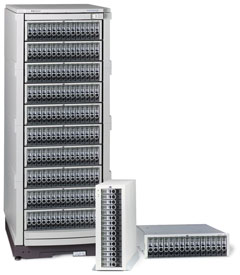
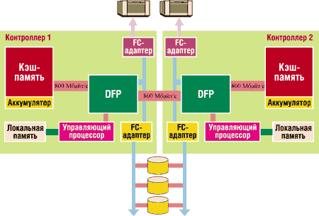
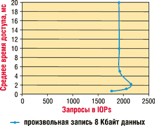

Андрей Борзенко
В условиях бурного развития Интернет-технологий информация становится основным стратегическим ресурсом. Способность информационной системы вносить стратегический вклад в бизнес компании во многом определяется надежностью хранения и скоростью доступа к данным. Сложность и емкость современных центров данных продолжают расти такими темпами, которые в прошлом невозможно было себе представить. Сегодняшние ИТ-администраторы порой бывают просто обескуражены растущей сложностью задач управления при сокращении трудовых ресурсов компаний.
Подсистемы хранения - один из основных факторов, вносящих вклад в расширение и усложнение информационных систем. Когда-то называвшиеся периферийными, системы хранения (и хранимые в них данные) теперь вышли на передний план и стали средоточием всей ИТ-инфраструктуры. Нередко в крупных и средних центрах данных системы хранения и управление ими образуют единую, довольно весомую позицию в бюджете. Современной сбалансированной вычислительной системе в качестве подсистемы хранения данных требуется надежное, масштабируемое и управляемое решение.
Обновленная компания Hewlett-Packard (http://www.hp.com) имеет весьма широкий портфель предложений в области систем хранения данных. Продукты HP способны обеспечить централизованное хранение и управление пользовательскими данными. Немаловажную роль играет и приверженность компании открытым технологиям и стандартам. Предлагаемые на базе продуктов HP решения способны работать в неоднородной среде с серверами и системами различных производителей, обеспечивая эффективное и надежное хранение данных в средах HP-UX, Sun Solaris, IBM AIX, Microsoft Windows NT/2000 и т. д. Компоненты систем обычно взаимозаменяемы, а линейка продуктов позволяет проводить модернизацию до более старших моделей с наследованием всех инвестиций. Не секрет, что построение корпоративной системы хранения данных на продуктах от одного производителя дает неоспоримые преимущества в простоте интегрирования и администрирования, в совместимости и возможности получить техническую поддержку в одном месте.
В ближайшее время Hewlett-Packard намеревается объединить и упорядочить ассортимент дисковых массивов, а также сосредоточить усилия на сближении систем NAS/SAN. А пока в качестве решения начального и среднего класса компания намерена по-прежнему предлагать массивы HP VA (Virtual Array) 7000 для систем, основанных на HP-UX. Как известно, дисковые массивы данного класса масштабируются до нескольких терабайт, имеют встроенные средства обеспечения отказоустойчивости и виртуализации данных. Такие массивы применяются, как правило, для создания централизованных систем хранения данных уровня отделов и средних предприятий. Мы рассмотрим здесь технологию построения таких дисковых массивов среднего класса, как VA7100, VA7400 и VA7410, которые имеют не только встроенные средства обеспечения отказоустойчивости (дублированные блоки питания, зеркалированная кэш-память и автоматическое перераспределение данных по дискам для поддержания заданного уровня RAID), но и средства создания бизнес-копий данных по технологии "моментальных снимков". Более подробно с техническими характеристиками данных устройств можно ознакомиться на сайте http://www.hp.ru.
|  | Дисковые массивы HP VA.
|
Основные требования к системе хранения
Основные требования к системе хранения мало меняются со временем - защита данных и их целостность всегда были важны для успешного ведения любого бизнеса. Однако, поскольку центры данных должны быть для бизнеса круглосуточно доступным ресурсом постоянной готовности, непрерывный доступ к данным и их защита превращаются в критичные факторы, становясь основным требованием.
Непрерывный доступ к данным имеет два важных аспекта: высокая готовность и производительность. С точки зрения готовности, если речь идет об устройствах хранения, возможны всего два состояния - устройство или функционирует нормально и обеспечивает доступ к данным, или оно неисправно. Гарантированный доступ к данным часто обеспечивается при помощи различных отказоустойчивых механизмов. Производительность также влияет на доступность данных, но она обычно не рассматривается как двоичное (да или нет) условие. Тем не менее недостаточная производительность может ограничивать доступ к данным. Неприемлемый уровень быстродействия системы хранения данных порой имеет для бизнеса такие же последствия, как и полный отказ оборудования. Следовательно, для обеспечения непрерывного доступа к данным в устройствах оперативного хранения равно важны как отказоустойчивость, так и высокопроизводительная архитектура.
При том, что защита данных и непрерывный доступ остаются первостепенными требованиями к системам хранения, появился и еще один критерий. Снижение стоимости базовых систем хранения и нужды повышения конкурентоспособности бизнеса привели к тому, что число всевозможных изменений в архитектуре центров данных начало экспоненциально расти. На администрирование этих изменений ИТ-менеджерам приходится резервировать в бюджете значительные суммы. Планирование и выполнение этих изменений осложняется нехваткой опытных администраторов систем хранения данных. Некоторые аналитики предсказывают, что если при текущем уровне роста систем не повысится существенно эффективность работы администраторов систем хранения, то к 2010 г. потребность в таких администраторах сравняется с численностью населения штата Калифорния.
Таким образом, современный ИТ-центр требует рентабельных устройств хранения, характеризующихся высокими готовностью, целостностью данных, производительностью и позволяющих снизить затраты на управление. Технологии, снижающие время внедрения новых приложений и текущие расходы на управление, могут стать ключом к поддержанию конкурентоспособности в современной деловой среде.
Компания Hewlett-Packard располагает сегодня линейкой систем хранения, отвечающей этим требованиям. Основанные на патентованной технологии третьего поколения, представители семейства HP VA расширяют возможности систем хранения данных среднего уровня. Решения на основе этих устройств обладают улучшенными средствами обеспечения целостности данных и высокой готовности, что создает более надежную защиту от потери данных и простоев. Модульная архитектура позволяет снизить затраты, оплачивая расширение системы по мере ее роста. HP VA обладают высокой производительностью и хорошим соотношением цена/качество среди систем высокой готовности. Мощные средства управления снижают как время внедрения, так и текущие расходы.
Целостность данных и высокая готовность
Сердцевина массива HP VA - заказная специализированная микросхема (ASIC), разработанная компанией Hewlett-Packard. Этот чип играет ключевую роль в обеспечении высокого быстродействия, защите данных и снижении затрат в пределах единой архитектуры. Команда инженеров потратила три года на разработку этой ответственной микросхемы, получившей название Data Flow Processor (DFP). Аппаратная архитектура (рис. 1) виртуального массива HP VA имеет следующие важнейшие характеристики:
- избыточность - сдвоенные контроллеры, блоки питания, вентиляторы и зеркалированный буфер записи со встроенной батареей;
- защита данных - ECC и зеркальная кэш-память, сквозная защита данных и RAID 5 DP (с двойным контролем по четности);
- производительность - 800 Mбайт/с, архитектура массива с тесной взаимосвязью, несколькими независимыми путями данных и высокопроизводительным контроллером на основе PowerPC
|  |
| Рис. 1. Блок-схема архитектуры HP VA.
|
Сквозная защита данных
Сквозная защита данных - это аппаратно реализованный процесс, гарантирующий, что сервер прочитывает именно те данные, что были записаны. В массивах HP VA эта защита реализована непосредственно в специализированном процессоре DFP. По мере записи данных в массив микросхема немедленно инкапсулирует каждый сектор при помощи дополнительного проверочного слова, которое сопровождает данные по мере их перемещения через контроллер на жесткий диск и служит для обнаружения ошибок. В тот момент, когда сервер считывает данные, контроллер на финальной стадии должен сверить корректность этого слова. Если обнаружена ошибка, то контроллер не позволит серверу использовать ошибочные данные.
Проверочные слова формируются на основе не только данных, но и информации об адресе, защищая систему от ошибок, возникших как на диске, так и в контроллере массива. Диски проверяют, чтобы считанные биты не отличались от тех, что были записаны в сектор, однако имеется небольшая, но реальная вероятность, что вследствие непредвиденной комбинации обстоятельств диск выдаст информацию из неверного сектора.
В обычных компьютерах, как правило, на четность проверяется только память; в ПК-серверах уже имеются базовые средства коррекции ошибок, а ответственные серверы, на которых работают базы данных всей компании, используют несколько различных средств коррекции ошибок. Чем более ответственная роль возлагается на компьютерную систему, тем важнее использовать несколько схем проверки целостности. Все это относится и к дисковым массивам: диск в обычном ПК выполняет только самопроверку, а скромная дисковая подсистема для некритичных данных обеспечивает защиту от отказа дисков на основе RAID. Однако массивы для ответственных деловых приложений требуют нескольких схем защиты данных и поддержания их целостности.
Сквозная защита данных - ключ к обеспечению целостности данных для ответственных деловых приложений. Сходные возможности имеются в массивах верхнего ценового диапазона и лишь в некоторых массивах среднего уровня. Массивы без этих возможностей имеют низкий класс целостности данных - в этом случае контроллер массива может, например, вернуть ошибочные данные серверу без всякого уведомления, и ошибка не будет распознана приложением. Хотя вероятность такой ошибки достаточно мала, ее последствия могут быть весьма разрушительными - обычно это необъяснимый отказ системы или повреждение базы данных.
Технология RAID 5DPRAID 5DP - это еще один механизм защиты, используемый в массивах HP VA. Он сходен со стандартным уровнем RAID 5, отличаясь от него добавлением схемы защиты на основе двойной проверки четности (dual parity protection scheme). Каждый блок данных в RAID 5DP имеет два блока связанной с ним избыточной информации, а не один. Из информации, опубликованной Hewlett-Packard, следуют два факта. Во-первых, новая схема обеспечивает более высокую защиту данных, чем в стандартных массивах RAID 5, плюс в равной конфигурации достигается на 10% большая эффективность. Во-вторых, RAID 5DP обеспечивает массиву HP VA устойчивость почти ко всем типам одновременного отказа двух дисков при любой конфигурации массива. Прокомментируем этот второй механизм более подробно.
Независимо от числа дисков или конфигурации массива, в момент отказа первого диска во всем массиве имеется только один или два других критичных диска. Иными словами, любой из других некритичных дисков может отказать одновременно с первым, но массив будет продолжать функционировать без потерь данных. Отказ критичного диска вызвал бы утрату данных. Рассмотрим пример с типичной конфигурацией из 45 дисков. После отказа первого диска среди остающихся 44 имеется один или два диска, отказ которых привел бы к потере данных. Отказ любого из прочих 42 дисков не скажется на готовности данных. Такой массив сравним с другими массивами, сконфигурированными в структуру RAID 1+0, но его возможности превышают возможности любой иной RAID-системы, сконфигурированной в традиционный RAID-массив уровня 5. Как известно, в последнем случае глубина чередования определяет оставшиеся критичные диски в системе после первоначального отказа диска. Например, в типичной конфигурации 5+1 диск (для RAID 5), в системе после первоначального отказа имеется пять критичных дисков. Логика, реализованная в контроллере массива VA, расширяет эту способность. Каждый контроллер обладает информацией о том, какие данные подверглись воздействию при одновременном отказе второго диска, и он будет восстанавливать эти данные в первую очередь, прежде чем восстановит двойную избыточность в данных массива RAID 5DP. Инженеры компании HP считают, что если сквозная защита данных отвечает возможностям массивов высокого класса, то RAID 5DP - это функциональность, превышающая возможности высококлассных массивов. |
Модульный дизайн
Модульные массивы предоставляют администраторам больше гибкости при выборе начальной конфигурации и позволяют легко расширять систему после ее первоначальной установки. Модульные массивы - практичный компонент сетей хранения данных Storage Area Network (SAN), использующих Fibre Channel. Малый объем, занимаемый массивом этого типа, и соответствующая конструкция высокой плотности дают возможность, используя технологию SAN, обеспечить эффективное масштабирование. Такая архитектура снижает затраты и предоставляет возможность инвестировать в инфраструктуру по мере ее развития - выгодное отличие в сравнении с так называемыми монолитными архитектурами. Виртуальные технологии, использованные в массиве HP VA, придают дополнительную ценность и гибкость модульным решениям. Развитие виртуальных массивов обеспечивается следующими их свойствами:
- быстрое расширение доступной емкости - от минимальной поддерживаемой дисковой конфигурации до максимальной - без прерывания обслуживания;
- использование любой конфигурации поддерживаемых дисков, а также любого их числа или емкости без усложнения процесса управления;
- гибкость в размещении дополнительных устройств хранения - благодаря оптоволоконному интерфейсу их можно размещать в любом месте центра данных;
- совместимость со всей линейкой устройств инфраструктуры на основе оптоволоконных соединений от компании HP - как для непосредственного подключения, так и для топологии SAN;
- поддержка большого числа ОС, включая Solaris, AIX, Linux, Netware и т. д., обеспечивает как консолидацию систем хранения, так и защиту капиталовложений.
Эти характеристики все вместе обеспечивают больший уровень гибкости и меньшие затраты на управление, чем иные дисковые массивы.
Увеличение емкости
Одно из принципиальных различий между массивами серии HP VA и традиционными системами хранения - начальная емкость при покупке. В традиционной технологии построения дисковых массивов диски должны приобретаться группами в соответствии с требуемой конфигурацией RAID-массива. Первоначальная конфигурация традиционного массива обычно являет собой статический компромисс между производительностью, емкостью хранения и степенью готовности. Для массивов серии HP VA нет нужды приобретать диски группами для конфигураций RAID 1+0 или RAID 5DP. Виртуализация накопителей отменяет это требование; все имеющиеся диски рассматриваются как общий пул доступной емкости хранения. Добавление дисков просто увеличивает емкость этого пула. Кроме того, HP предлагает интуитивный инструмент планирования емкости системы хранения, который показывает, какое минимальное число дисков будет удовлетворять требованиям к емкости. Соединение виртуализации системы хранения с инструментом планирования ее емкости существенно помогает решать вопросы приобретения требуемого количества дисков.
Теперь сравним подходы в фазе роста системы хранения. Модульная система позволяет реализовать модель оплаты по мере роста, и в этом ее преимущество. Традиционные же массивы после расширения оказываются ограничены либо в гибкости конечной конфигурации, либо в ее производительности. Как и при начальном конфигурировании, диски для традиционных массивов должны приобретаться группами, отражая структуру уровня RAID и размер блока (stripe size). Практика модернизации традиционных массивов требует, чтобы эти диски устанавливались в виде островков, изолированных и независимых от других дисков массива. Эта изоляция приводит к низкой эффективности использования емкости, а также к недостаточно эффективному использованию быстродействия этих дополнительных дисков.
При использовании технологии HP VA рост емкости достигается при любой емкости и числе дисков, поэтому можно приобретать только то количество дисков, которое реально требуется. Новые диски можно установить и сконфигурировать всего за несколько минут, а не часов, как в случае с традиционными массивами. После установки дисков контроллер будет реорганизовывать данные в фоновом режиме для эффективного включения новых дисков в работу, с тем чтобы максимально задействовать доступную емкость и производительность накопителей.
Эти отличия минимизируют не только затраты на приобретение дискового массива, но и время, требуемое для внедрения решения и управления им.
Характеристики производительности
Производительность дискового массива может быть таким же критичным фактором для бизнеса, использующего накопители для оперативного хранения данных, как и отказоустойчивость. Медлительная система хранения данных - потенциальный источник неудовлетворенности пользователей или упущенной выгоды.
Для успешного внедрения решения нужна корректная оптимизация систем хранения. К сожалению, отказоустойчивые дисковые массивы - весьма сложные устройства, и успешная настройка параметров быстродействия может оказаться непростой задачей. По мере изменения приложений или расширения емкости массива часто обходятся без перенастройки, поскольку время, отпущенное на управление, ограничено.
Ряд свойств массивов серии HP VA снижают сложность настройки системы на оптимальную производительность и повышают вероятность того, что она будет поддерживаться на высоком уровне. Эти характеристики следуют из принципов, заложенных в систему при ее разработке; базируются они на хорошо известных параметрах систем хранения, серверов и баз данных. Разработчики выделяют здесь три параметра: время отклика буфера записи, производительность дисков массива, большой размер блоков.
Время отклика буфера записи
Массивы HP VA характеризуются довольно быстрым откликом. В общем случае малое время отклика буфера записи приводит к уменьшению времени ожидания для приложения. Благодаря этому приложение может использовать весь заложенный в нем потенциал производительности. В массивах HP VA заложены три особенности, позволяющие этого достичь: в них используются быстрые процессоры, оптимизированный по производительности микрокод (firmware) и специализированное высокопроизводительное аппаратное обеспечение зеркалирования записи. Многие иные массивы тоже используют быстрые процессоры и оптимизированный микрокод, но архитектура процессора DFP дает массивам серии VA преимущество в зеркалировании буфера записи. Дело в том, что процессор DFP работает с высокоскоростной сетью "точка-точка" (point-to-point network). Это снижает перегрузку контроллера и гарантирует целостность данных. При малом числе инструкций от внутреннего процессора каждая зеркалированная запись может быть выполнена очень быстро и с гарантией, что данные не будут повреждены ни по их содержанию, ни по логическому порядку.
На рис. 3 показано время отклика одного логического устройства (LUN) как функция запроса. При тестировании задействованы произвольные операции записи на диск, а не просто планируемые 100% нагрузки буфера записи. Результат измерений времени отклика при отсутствии очереди запросов находится в самой нижней точке кривой - на уровне примерно 700 мс. Это время, требуемое для записи в кэш-память, включающее время копирования данных в зеркальную кэш-память. Обычным дисковым массивам непросто достичь такого уровня быстродействия. В них запись или считывание по буферному каналу требует от контроллера намного большего запаса производительности для инициирования процесса, а скорость передачи данных намного меньше, чем в массивах серии HP VA.
|  | Рис. 2. Производительность при произвольной записи.
|
Оптимизированное по производительности приложение намного сильнее зависит от времени отклика буфера в режиме записи, чем от количества операций в секунду при считывании из буфера. Оптимизированное приложение для кэширования чтения будет в первую очередь использовать системный буферный кэш, а не дисковую кэш-память. Чтение из буфера, построенного на основе системной памяти, идет намного быстрее - сотни тысяч операций против десятков тысяч для дисковых буферов. Время отклика массива при записи критично для таких операций, поскольку в типичном случае приложение, прежде чем продолжить выполнение задачи, ожидает завершения операции ввода-вывода. Более короткое время отклика кэш-памяти при записи (write cache response time) означает, что приложение меньше находится в режиме ожидания, и, следовательно, тесно взаимосвязанная архитектура контроллера обеспечивает наилучшие характеристики в режиме реальной работы.
Производительность дисков
Производительность массива напрямую зависит как от быстродействия диска, так и от быстродействия буфера записи. Открытые системы (UNIX и Windows) весьма дружественны по отношению к буферу массива, поскольку эффективные механизмы буферизации дисков встроены в базы данных и расположены на пути передачи данных при операциях ввода-вывода. Разумный размер кэш-памяти может внести заметный вклад в повышение быстродействия всей системы. Однако, чтобы эффективно поддерживать работу кэш-памяти, массив должен использовать диски с хорошими характеристиками. Следовательно, при отборе дисковых массивов по производительности следует сравнивать время отклика кэш-памяти при записи и показатели быстродействия в расчете на один диск. Эти параметры служат хорошими индикаторами уровня производительности при оперативной обработке транзакций, производительности дисковой или сетевой файловой системы.
Эффективный размер блоков
Эта особенность массивов серии HP VA одновременно и наиболее ценна для увеличения производительности реальных задач, и наиболее противоречива. Большие блоки эффективно распределяют нагрузку между всеми дисками массива, увеличивая тем самым общее быстродействие системы. Противоречивость, как полагают разработчики, проистекает из старых правил конфигурирования баз данных, когда администраторам БД рекомендовалось изолировать различные их компоненты, распределяя их по конкретным физическим дискам массива. Тем самым устранялись конфликты и снижались нагрузки на диски. Это правило более не имеет смысла по двум причинам. Во-первых, очень трудно достичь идеального баланса системы. Любое нарушение баланса в распределении рабочей нагрузки приведет к неполному использованию ресурсов производительности. Во-вторых, эффективное кэширование записи изменило поведение дисковых подсистем в смысле их производительности.
Для иллюстрации этого утверждения инженеры Hewlett-Packard предлагают рассмотреть аналогию с банковским клерком. Обслуживание в каком банке вы предпочтете - в том, где единая очередь ко всем клеркам, или в банке с раздельными очередями? Очевидно, что единая очередь по времени обслуживания наилучшим образом отвечает запросам тех, кому требуются банковские услуги. Однако старая школа мышления, оперирующая понятиями конфликта при одновременном обращении к одному физическому диску, строится на том, что некоторые клиенты более важны, чем другие, и для них должна быть выделена отдельная группа клерков, чтобы предоставить им приоритетное обслуживание.
Здесь все хорошо, за исключением двух проблем. Первая - если банк неверно определил требуемое число выделенных клерков, важные клиенты могут прождать обслуживания в выделенной очереди даже дольше, чем если бы они обратились к услугам рядовых сотрудников. Вторая - кэш записи ведет себя как уполномоченный представитель (прокси) для заказчиков и "стоит в очереди" вместо них. Представьте себе, что вы пришли в банк и поручили вашу транзакцию кому-то, кто будет стоять в очереди за вас и выполнит все требуемые операции, а вы при этом можете спокойно уйти. Единственное, что вас заботит в этой ситуации, - будет ли в банке свободный посредник на момент вашего прихода. После чего посредников нужно обслужить в наиболее эффективном порядке, формируя тем самым единую очередь для всего числа клерков.
Это упрощенное описание того, почему расщепление данных по большому числу дисков - наилучшая конфигурация для достижения высокой производительности в современных дисковых массивах. Но это не только красивая аналогия. В настоящее время Oracle рекомендует именно такой подход к конфигурированию базы данных. На упомянутом уже рисунке показана кривая насыщения по числу запросов в пределах одного номера логического устройства (LUN). Логическое устройство распределено на полосы между 20 дисками. Для этого одного LUN кривая производительности дает 2 тыс. операций в секунду при произвольной записи данных объемом 8 Kбайт и времени отклика дисков в 1 мс.
Рентабельность
Решить, какая система хранения данных наилучшим образом удовлетворяет требованиям работы приложений, не так-то просто. Как правило, имеется множество альтернатив, каждая из которых характеризуется уникальной комбинацией возможностей. Для аналитика процесс выбора обычно сводится к сравнению спецификаций - больших таблиц со множеством рядов и колонок с параметрами продуктов. К сожалению, наиболее важные с точки зрения производительности критерии часто в них отсутствуют. Соотношение цена/качество должно рассматриваться наряду с базовыми характеристиками компонентов и "чистой" производительностью. В то время, как абсолютные значения производительности говорят о возможностях архитектуры массива, соотношение цена/качество (и удельная стоимость в долл./Mбайт) служит для бизнеса показателем быстродействия устройства хранения.
В сравнительный анализ обычно включаются такие параметры, как долл./Гбайт, долл./IOP и долл./Mбайт/с. Тем не менее использование этих критериев может привести к неочевидным выводам. Например, устройство начального уровня VA7100 имеет меньшее значение абсолютного быстродействия, чем система среднего уровня VA7400. Конечно, многие заказчики предпочли бы VA7400, поскольку этот массив обеспечивает наивысшую производительность. Однако если включить в анализ конкретные цены приложений, их требования к емкости хранения, то наилучшим выбором может оказаться как раз система VA7100. В частности, компании, ведущие торговлю через Интернет, выбирают VA7100 для организации информационных хранилищ. Для их бизнеса важнее соотношение цена/качество данного решения, а не абсолютное значение производительности для отдельного дискового массива.
Управляющее ПО
Управление устройствами важно для получения долговременной отдачи от использования дискового массива, оно также позволяет решить проблемы постоянного расширения емкости хранения в центрах данных. Наряду с управлением отдельными устройствами массивы HP VA интегрируются с рядом программных продуктов семейства OpenView для формирования корпоративных систем управления.
ПО Command View SDM имеет набор различных интерфейсов и рабочих топологий, которые, будучи объединены, позволяют достичь гибкости и простоты использования. Можно выбирать из трех интерфейсов взаимодействия с массивом: это графический интерфейс, командная строка и командное меню. Реальная гибкость топологии проистекает из способности выполнять любые из перечисленных интерфейсов как на сервере, непосредственно подключенном к массиву, так и на выделенной рабочей станции или с любого компьютера сети. Работать с графическим интерфейсом можно непосредственно из любого браузера в сети, не устанавливая на компьютере никакого специального ПО.
Основную часть времени при настройке массива занимают его физическая установка и подключение кабелей. После подачи питания любую описанную в сценарии конфигурацию можно реализовать в течение пяти минут. Сюда входят установка ПО Command View SDM, конфигурирование номеров LUN, установка ПО Secure Manager VA и Business Copy VA. Экономия времени и средств достигается не только при начальной установке, но и при восстановлении системы после аварийного сбоя, когда простой может обойтись в десятки тысяч долларов в час. Это значительный шаг вперед в сравнении с традиционными дисковыми массивами.
Как известно, оптимизация работы системы, приложения и самого массива может быть весьма трудоемкой задачей. Массивы серии VA предлагают два практичных решения: одна конфигурация для группы, где все решает производительность, а вторая - для группы, где требуется максимально возможная производительность, но с учетом ограниченного бюджета. Имеются еще несколько дополнительных конфигураций, позволяющих администраторам массивов серии HP VA выработать решение относительно баланса производительности и целостности данных. Базовая конфигурация для группы, где все решает производительность, - уровень RAID 1+0. Он обеспечивает максимально возможную производительность почти для всех приложений, но отличается самой низкой эффективностью использования доступной емкости и представляет собой одно из самых дорогостоящих решений по критерию долл./Mбайт. Для второй группы массивы HP VA обеспечивают опцию самоуправления - AutoRAID.
Запрограммированный в соответствии с теми же правилами, которые опытные администраторы RAID-систем используют для оптимизации по критерию цена/производительность, компонент HP AutoRAID проводит мониторинг и настройку размещения данных для достижения оптимальных характеристик. Данная технология контролирует использование хранимых в массиве данных и определяет наилучший уровень RAID. Последовательно считываемые данные хранятся в массиве RAID 5DP, который обеспечивает наилучший баланс между производительностью и эффективностью использования емкости накопителей. Для произвольной записи данных используется RAID 1+0, который обеспечивает наилучшие характеристики для часто модифицируемых данных. Управление произвольно записываемыми данными аналогично управлению в иерархической системе хранения: активные данные содержатся в массиве уровня RAID 1+0; когда данные становятся пассивными, они автоматически мигрируют в массив уровня RAID 5DP, обеспечивая тем самым максимальную эффективность хранения.